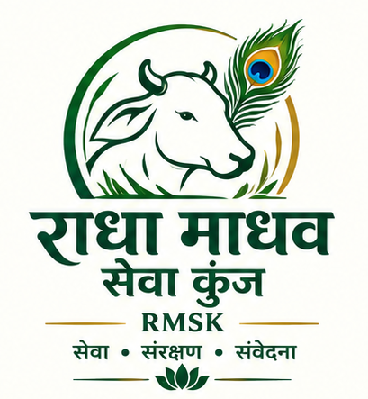

01
सुरक्षित आश्रय
असहाय, घायल या बेसहारा गौवंश को उपलब्ध व्यवस्था के अनुसार सुरक्षित स्थान दिलाने का प्रयास।

गौसेवा • गौरक्षा • गौसंरक्षण
गौवंश की सेवा, सुरक्षा और सम्मान के लिए समर्पित एक प्रयास।
हमारी भावना
राधा माधव सेवा कुंज ट्रस्ट में गौसेवा केवल भोजन देने तक सीमित नहीं है। सुरक्षित आश्रय, स्वच्छ वातावरण, पर्याप्त आहार, पानी, स्वास्थ्य देखभाल और प्रेमपूर्ण व्यवहार—ये सभी सेवा के महत्वपूर्ण हिस्से हैं।
यदि किसी गाय या बछड़े की देखभाल करना संभव न हो, तो उसे सड़क पर छोड़ने के बजाय पहले संपर्क करना ही संवेदनशील विकल्प है।
राहुल जी से संपर्क करेंOur Activities की तरह व्यवस्थित सेवा क्षेत्र
असहाय, घायल या बेसहारा गौवंश को उपलब्ध व्यवस्था के अनुसार सुरक्षित स्थान दिलाने का प्रयास।
दैनिक भोजन, पानी और आवश्यक आहार की व्यवस्था में सेवा-सहयोग।
बीमार या घायल गौवंश के लिए आवश्यक जाँच और उपचार की दिशा में सहायता।
स्वच्छता, पानी, आराम और नियमित सेवा के माध्यम से बेहतर देखभाल।
गौवंश को सड़क पर न छोड़ें
किसी गाय या बछड़े को बेसहारा छोड़ना उसकी परेशानी बढ़ा सकता है। स्थिति बताकर उपलब्ध व्यवस्था के अनुसार सहायता प्राप्त करें।
Help & Support
आप अपनी क्षमता और श्रद्धा के अनुसार सेवा में सहयोग कर सकते हैं।
गौवंश के दैनिक आहार में सहयोग।
दवा और उपचार के लिए सहयोग।
गौसेवा के लिए श्रद्धापूर्वक सहयोग।
मासिक या नियमित सहयोग से सेवा में सहभागिता।
ट्रस्ट के सत्यापित UPI, QR और बैंक विवरण उपलब्ध होने के बाद यहाँ जोड़े जाएंगे।
Sacred Gallery की शैली में
अभी अस्थायी photos हैं; आपकी वास्तविक तस्वीरों से पूरा section बदला जा सकता है।
सेवा • संरक्षण • संवेदना
करुणा से किया गया हर छोटा प्रयास किसी जीव के लिए बड़ा सहारा बन सकता है।
संपर्क करें